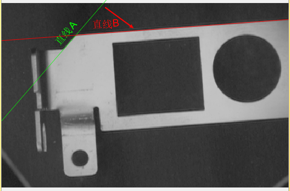
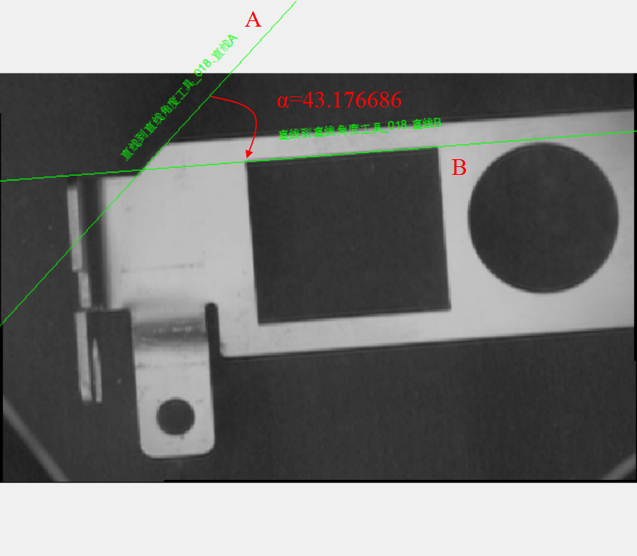
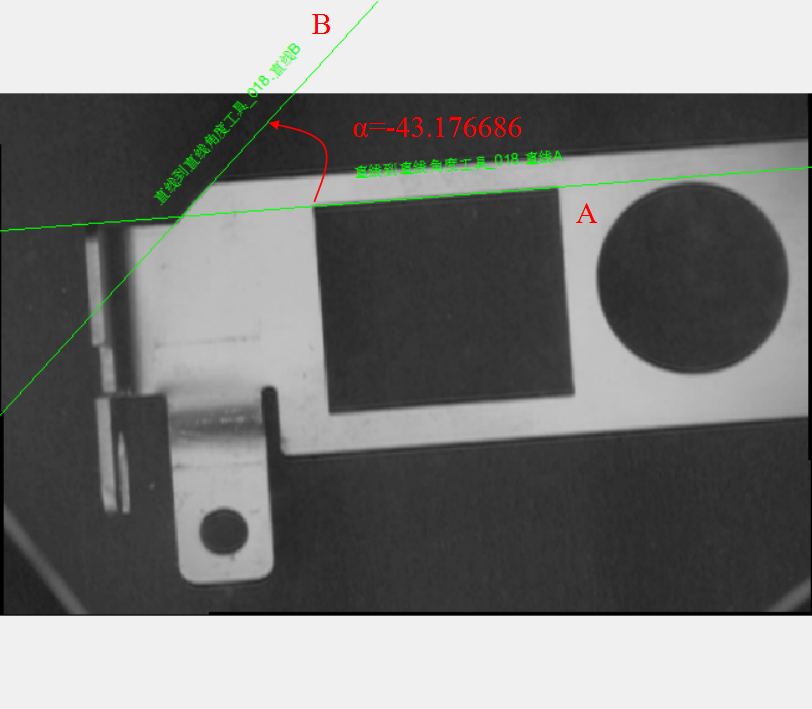
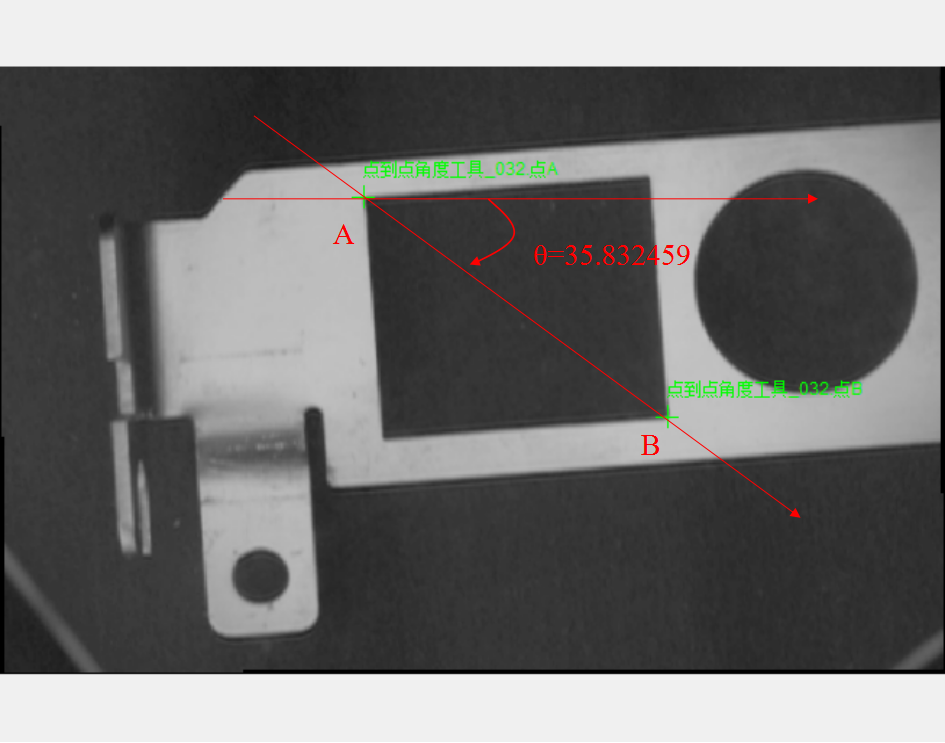
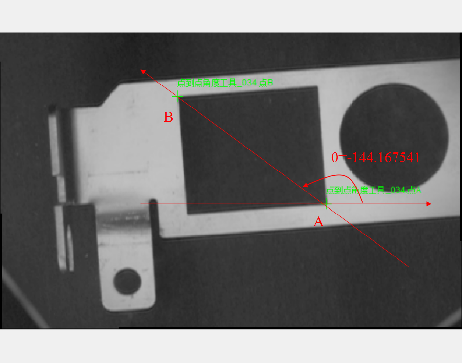

Tính toán góc giữa đường thẳng với đường thẳng và góc giữa điểm với điểm.
| Tên giao diện | Mô tả giao diện |
|---|---|
| AngleLine2Line | Góc từ đường thẳng đến đường thẳng |
| AnglePoint2Point | Góc từ điểm đến điểm |
Chức năng：Tính góc từ đường thẳng lineA đến đường thẳng lineB, chiều kim đồng hồ là dương, ngược chiều kim đồng hồ là âm, phạm vi [-π, π]。
Như hình dưới đây, từ A đến B kết quả là 44.9 độ, từ B đến A là -44.9 độ：

Tham số：
lineA：Đường thẳng A, kiểu scLine。
lineB：Đường thẳng B, kiểu scLine。
Giá trị trả về：Kết quả góc, đơn vị radian, kiểu scRadian。
Chức năng：Tính góc giữa hai điểm, tức là góc giữa đường nối hai điểm với phương ngang, đơn vị radian, phạm vi [-π, π]。
Tham số：
p1：Điểm A, kiểu sc2Vector。
p2：Điểm B, kiểu sc2Vector。
Giá trị trả về：Kết quả góc, đơn vị radian, kiểu scRadian。
Góc từ đường thẳng đến đường thẳng
Góc α giữa đường thẳng A và đường thẳng B được mô tả như sau: giả sử hướng của đường thẳng là lên và sang phải là dương, khi xoay đường thẳng A một góc α thì sẽ song song (hoặc trùng) với đường thẳng B. Trong đó α dương khi xoay theo chiều kim đồng hồ, âm khi xoay ngược chiều kim đồng hồ. Sơ đồ minh họa như Hình 1：


Góc từ điểm đến điểm
Góc θ giữa điểm A và điểm B được mô tả như sau: đường thẳng AB được xác định bởi điểm A và điểm B, hướng từ A đến B, phương ngang sang phải là dương. Khi xoay đường ngang một góc θ thì sẽ song song (trùng) với đường thẳng AB. Trong đó θ dương khi xoay theo chiều kim đồng hồ, âm khi xoay ngược chiều kim đồng hồ. Sơ đồ minh họa như Hình 2：

